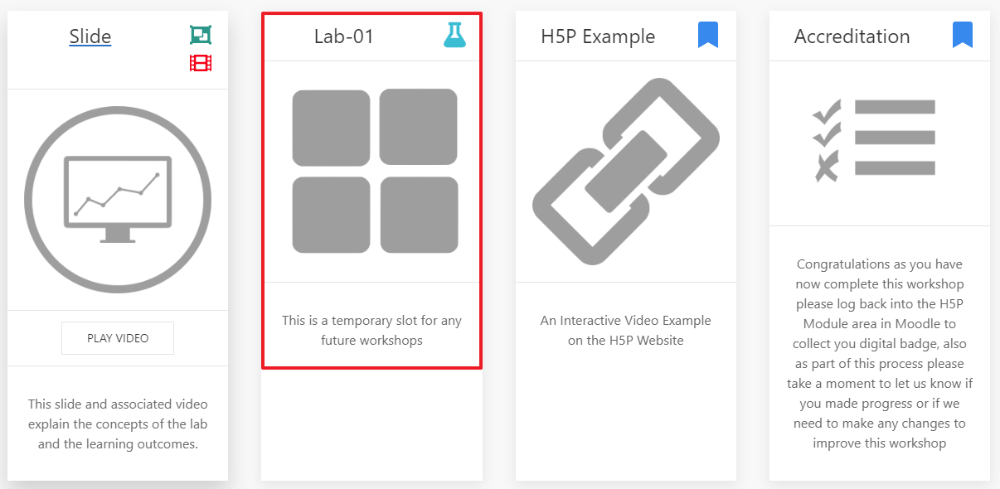
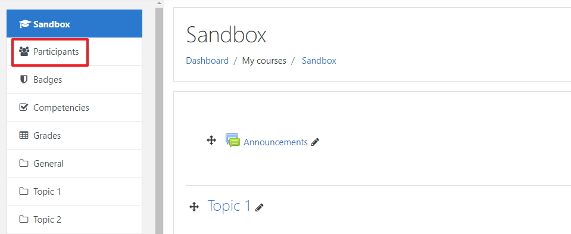
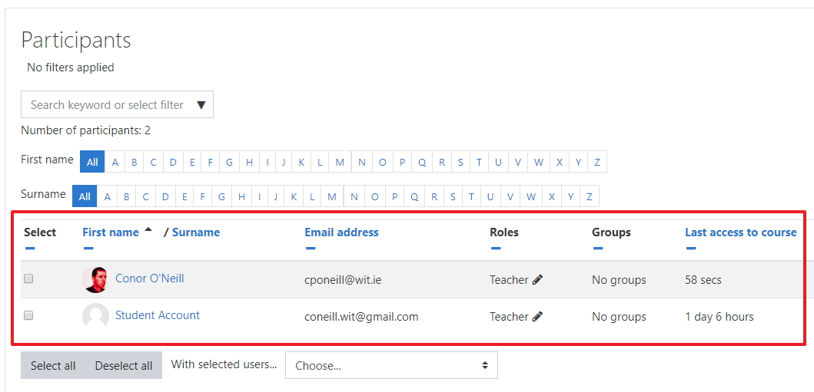

Objectives
In this lab we will look at putting the basics of you Moodle module in place, such hiding sections that are not in use and uploading a module image.
How to use this lab
When you click on the lab card on the workshop screen (see example below) you will be presented with the labs steps screen

Lab steps
Next you will need to work your way through each step, starting with the objective (this screen) then work your way through the steps start with 01 then moving to 02 and so on.

Getting back to the home screen
In order to get back to the workshop screen simply click on the workshop name in the top left

Next
Move to step 01 in the lab
Moodle Sandbox
In order to complete these workshops you will have to work from a training area in Moodle,we call this a sandbox, please contact Conor to gain access.
Log into Moodle here and navigate to your sandbox.
The Module Image
Your Moodle module when created will have a default image, you can change the image in the Module settings
Change the Image
The image that your going to change is the image that is associated as the default image for the module when the module is first created, see below and example of a default image.

Edit Settings
To change the image you first need to editing the settings for the module.

Drag and Drop
To change the image drag and drop your image into the "summary files" space, you can use any image that you have, I just upload a .jpg file I had in my downloads folder.
Save your changes
Like all changes in Moodle you need to make sure you save your changes

Your done, Move to the next step.
The Module Sections
Your Moodle module when created will have a default sections, in this step you wil learn how and why you should close off blank (unuesed) sections.
Edit Settings
To hide blank section you first need to turn edit on for the module

Edit the section
Its important to hide a section because if the section is blank and is not hidden the student have visibility and it causes confusion for the student, click on edit then click on Hide section.

Repeat this process with all blank sections
When you finished and you have turned editing off your hidden section should now have a strike-through

Your done, Move to the next step.
The Module Participants
Normally your student (participants) will appear in your module, from time to time you may want to view the participant list to look up either the student email or their last access.
Participants option
To view the participants of a module click on the Participant on the left hand side of the screen.

Participants list
You now should be able to see the participants list along with other details such as they email address and when they last logged into this module.

Adding Participants
To add a participant click on the Enrol users button
Then search for the user that you want to add
When you find that user click on the name then click the Enrol button at the bottom of the popup screen
You have manually add a participant and if you look at the participants list once again you should see that user in the list.
Your done, Move to the next step.
TODO
Exercise
- Navigate to your Sandbox module and change the module image.
- In your Sandbox module hide all blank sections.
- In your Sandbox Module view the participant and add a new participant.